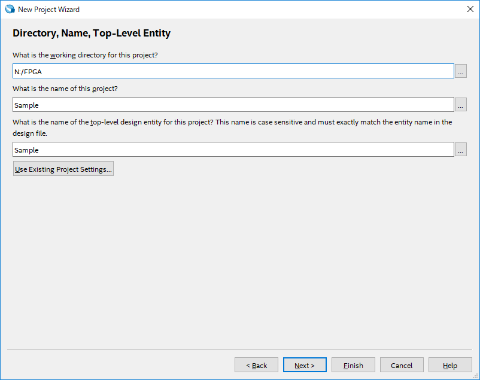
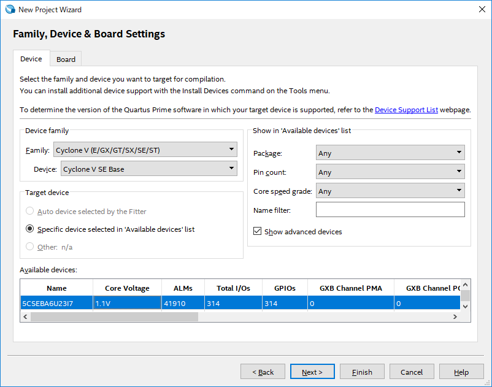

FileメニューからNew Project Wizardを選択し、DirectoryとProject名およびTop-level-entity名を指定する。
本実験では、Directoryをネットワークドライブ内FPGAフォルダに指定し、Project名をSampleとした。

次のAdd Filesウィンドウでは、User Libraries内Global librariesに配布されたPgeneratorを指定し、Addを押下する。
次のDeviceウィンドウは、本実験では以下の通りに設定する
